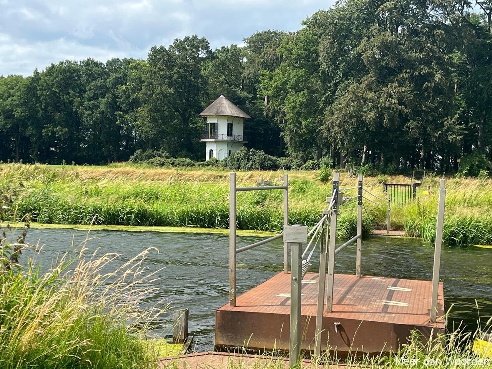
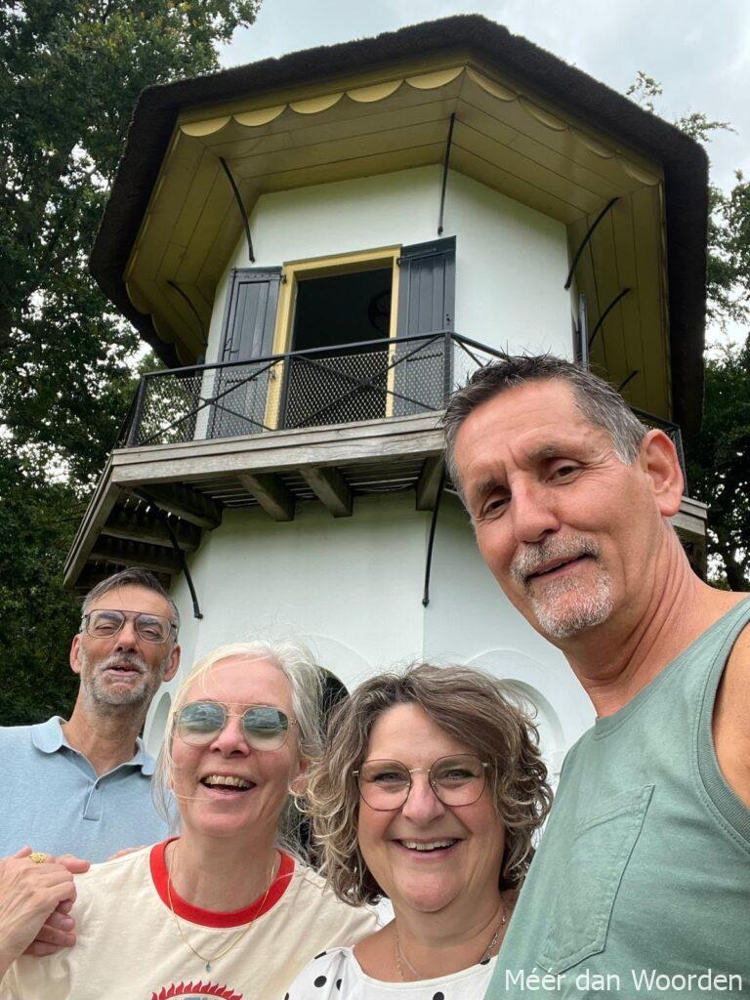

Soms kent het leven verassende plotwendingen. Zoals in de liefde bijvoorbeeld. We leerden elkaar kennen toen we 14 en 16 waren. Het was toen nog niet onze tijd blijkbaar, 40 jaar later toen we elkaar opnieuw ontmoetten wel.
We trouwden op 20-02-2020, op het IJzeren Torentje aan de Dijk van Westkapelle. Toen brak de coronapandemie uit en moesten we ons feest maar liefst drie keer verzetten. We hadden er al bijna geen zin meer in.
Uiteindelijk kon het in september 2021 toch doorgaan en tijdens het geweldige strandfeest bedachten mijn vriendinnen een lumineus plan: een post-vrijgezellenparty, jawel, ná de trouwerij! Die was er door die gruwelijke lockdowns namelijk bij ingeschoten. Waar? In Mierlo! Daar waar ik woonde voordat we naar Zeeland verhuisden en waar ik helemaal niet weg wilde. Een gemoedelijk Brabants dorp dat voelde als een warm bad toen ik daar als 12-jarige tiener kwam wonen. Een groot verschil met de koude douche en argusogen die ik ook kende van eerdere en latere verhuizingen.
Toch gingen we, het zou de vijfde verhuizing worden in mijn jonge leven. Voor de zoveelste keer mijn vrienden en vriendinnen achterlatend, opnieuw wennen aan een onbekende plek waar je niets en niemand kent, waar je je alweer een vreemdeling voelt, anders dan de anderen, een buitenstaander.
Dat postvrijgezellenfeest kon dus niet anders dan in dat ‘mythische’ Mierlo plaatsvinden. De dames wilden nu wel eens met eigen ogen zien of mijn lofzang over die ‘heilige’ plek wel terecht was. Kortom, ik werd ontvoerd – manlief zat in het complot – naar een gezellig vakantiehuisje op het Wolfsven. Het bosrijke park waar ik altijd langs fietste naar de middelbare school in Geldrop en met een fijn natuurlijk bosven waar mijn broers en ik zomers graag gingen zwemmen.
Mijn vriendinnen niet te flauw waren eensgezind, ik had een serieuze taak uit te voeren: bewijzen dat Mierlo echt zo leuk was als dat ik hen altijd had voorgehouden.
Lang verhaal kort, ik moest hen door het bos gidsen naar het dorp, hun de hotspots laten zien én ons oude huis. Zonder hulp van navigatie, nee, ouderwets analoog oriënteren! Pff, niet echt mijn sterkste kant. En bovendien best lastig na ruim 40 jaar, ook in Mierlo heeft de tijd niet stil gestaan en was er veel veranderd. Maar het lukte wonderwel!
Stel je dan nu het volgende beeld voor: aan het eind van mijn gidstoer, bij ons vroegere woonhuis, staan zes meiden ongegeneerd naar binnen te gluren. Tja, je begrijpt, dat voelde tamelijk ongemakkelijk. Ik vond dat ik het de bewoners maar beter kon uitleggen, dus belde ik aan. Een vriendelijk gezicht verscheen in de deuropening. Ik deed mijn verhaal en haar glimlach werd steeds breder. Ze nodigde me gastvrij binnen om ‘ons’ huis van weleer te bekijken.
En geloof het of niet, ik herkende bijna alles, hoewel er toch het nodige verbouwd en vertimmerd was. Mijn zolderkamer met uitzicht op de brandweertoren, de grote berk in de tuin wiens takken reikten tot aan mijn slaapkamerraam (en waarlangs ik stiekem een keer ben ontsnapt na een in mijn ogen onterecht huisarrest). De slaapkamer van mijn broer waar we altijd de Top40 luisterden en plaatjes draaiden. De zitkuil en de open haard in de woonkamer. Jeugdsentiment op zijn best!
Deze hartelijke ontvangst was het begin van een mooie vriendschap. Hoe bijzonder wil je het hebben, zomaar nieuwe vrienden cadeau krijgen van je vriendinnen. Mierlo en ik zijn de meiden nog steeds dankbaar!
Zo kent ook vriendschap soms verrassende plotwendingen.
Post scriptum:
Elk jaar gaan manlief en ik wel ‘n keer naar Mierlo en komt Mierlo naar Middelburg. Afgelopen zaterdag zouden wij weer naar Mierlo, jippie! Maar Mierlo was in Lochem, in hun knusse vakantiehuis ‘De oude beuk’. Of we niet eens daarheen wilden komen. Nou, vooruit dan.
Het werd niettemin een heerlijke zomerdag in de – toegegeven, eveneens prachtige – Achterhoek met fietsen over Landgoed Velhorst, wandelen langs de Berkel en met de trekschuit naar de overkant voor een bezoekje aan de Staringkoepel (ja, die van de dichter; nou ja, zijn dochter dan). En vanzelfsprekend werd de dag afgesloten met een drankje, hapje en lekker eten in de lommerrijke tuin van ‘De oude beuk’. Want hé, ook al is Mierlo in Lochem, het blijft wel warm en bourgondisch Brabants.
